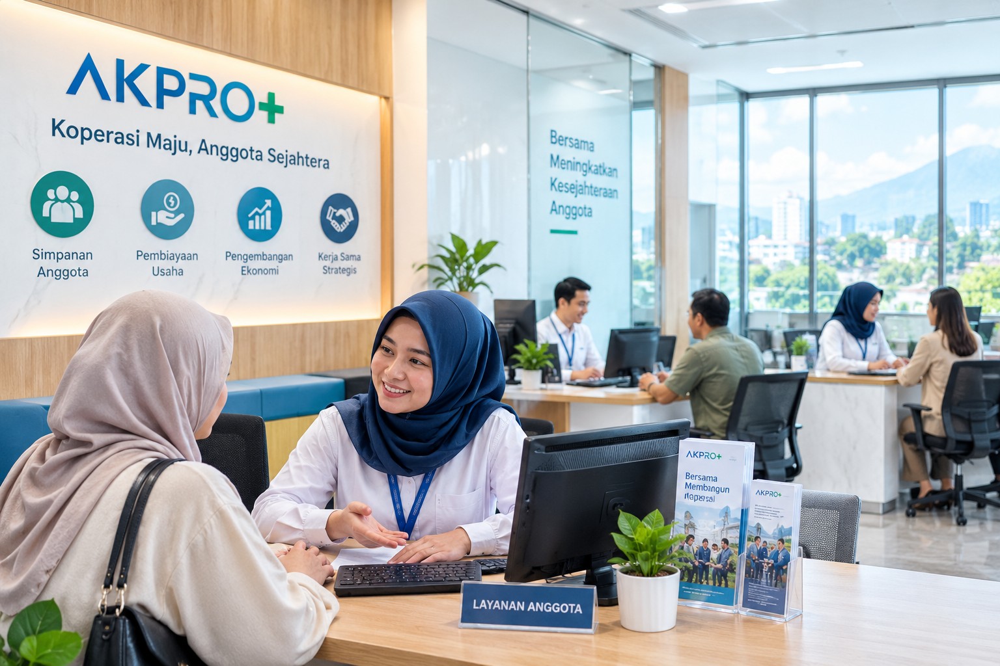

Perkoperasian
Keanggotaan, kepengurusan, kebijakan, dan pembagian sisa hasil usaha.
Beragam fitur dirancang untuk mendukung layanan anggota, kegiatan usaha, perencanaan, dan pengelolaan keuangan koperasi.
Tanyakan Ketersediaan Fitur ↗
Berbagai modul dapat mendukung layanan anggota, operasional, perencanaan, serta pengelolaan keuangan. Ketersediaan fitur mengikuti tahap penerapan.
Keanggotaan, kepengurusan, kebijakan, dan pembagian sisa hasil usaha.
Pengelolaan kas, rekening bank, pemindahan dana, dan pencocokan transaksi.
Produk dan transaksi simpanan anggota.
Produk, pengajuan, pencairan, dan angsuran pinjaman anggota.
Pencatatan transaksi dan penyusunan informasi keuangan.
Transaksi penjualan dan kegiatan usaha koperasi.
Pengadaan barang, pembelian, dan pengelolaan pemasok.
Informasi produk dan katalog usaha koperasi.
Pengelolaan aset tetap dan kategori aset koperasi.
Data pegawai, bagian kerja, dan jabatan.
Pengelolaan informasi dan kebutuhan perpajakan.
Dukungan pencatatan proses produksi dan kegiatan pengolahan.
Peninjauan dan penelusuran aktivitas koperasi.
Penjualan langsung melalui PoS terintegrasi.
Penyusunan rencana anggaran dan pemantauan biaya koperasi.
+ Pelaporan dan keterhubungan dengan layanan lain mendukung berbagai modul sesuai kebutuhan koperasi.
Data koperasi, aturan keanggotaan, serta informasi produk dan akun dikelola dengan peran yang saling melengkapi.
Data koperasi, unit kerja, cabang, pengguna, dan pengaturan layanan.
Mendukung tata kelola koperasiInformasi keanggotaan, kepengurusan, kebijakan, dan pembagian sisa hasil usaha.
Sesuai kebijakan koperasiData akun, mitra, produk, persediaan, dan pemetaan yang digunakan bersama.
Referensi untuk berbagai kegiatanFitur pendukung membantu koperasi memahami kegiatan serta menghubungkan layanan yang digunakan.
Laporan merangkum kegiatan operasional dan keuangan koperasi sebagai bahan pemantauan.
Mendukung komunikasi dengan layanan lain sesuai kebutuhan koperasi.
AKPRO+ dirancang agar kegiatan koperasi dapat mendukung pencatatan keuangan dan laporan yang relevan tanpa pencatatan berulang.
Pelajari Alur Kerja ↗